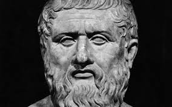
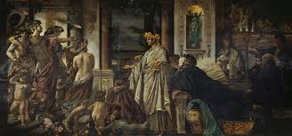
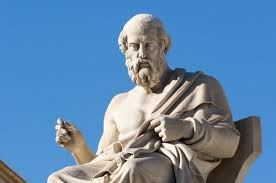

Platon
07.10.2020 | Mikołaj Sypuła | 23:05:00
Platon i jego zainteresowanie
fot. L. Zielaskowski/Archiwum Ilustracji WN PWN SA © Wydawnictwo Naukowe PWN Platon, właśc. Arystokles, gr. Plátōn, Aristoklḗs, łac. Plato, Aristocles, ur. ok. 427, prawdopodobnie w Atenach (wg niektórych świadectw na wyspie Eginie), zm. 347 p.n.e., Ateny, jeden z najsłynniejszych filozofów starożytnych Grecji; uczeń Sokratesa i nauczyciel Arystotelesa, założyciel Akademii Platońskiej. Cytat „Myśleć to co prawdziwe, czuć to co piękne i kochać co dobre — w tym cel rozumnego życia” Kalendarium ok. 427 p.n.e. urodził się prawdopodobnie w Atenach (lub na wyspie Eginie) ok. 407 p.n.e. został jednym z uczniów Sokratesa 399 p.n.e. wyjechał z Aten i schronił się w Megarze 387–385 p.n.e. założył Akademię Platońską i wykładał w niej do swojej śmierci 367 p.n.e. odbył podróż na Sycylię 347 p.n.e. zmarł w Atenach Urodził się ok. 427 p.n.e., prawdopodobnie w Atenach (wg niektórych świadectw na wyspie Eginie). Przydomek Platon [‘szeroki’, ‘barczysty’] nadano mu w młodości z powodu masywnej budowy ciała. Pochodził z jednego z najznakomitszych rodów ateńskich, w linii matki był potomkiem Solona. Zgodnie z urodzeniem odebrał staranne wykształcenie, posiadł dużą wiedzę w zakresie matematyki i muzyki oraz polityki; wg starożytnych przekazów zajmował się także malarstwem i pisał poezje. Po spotkaniu Sokratesa spalił tragedie przeznaczone na odbywający się podczas Dionizjów konkurs. W młodości słuchał wykładów heraklitejczyka Kratylosa; w wieku 20 lat został uczniem Sokratesa i przez 8 lat należał do grona jego najbliższych towarzyszy. Osoba oraz śmierć mistrza wywarły zasadniczy wpływ na życie i poglądy Platona (Sokrates występuje we wszystkich poza Prawami dialogach, w wielu jako postać pierwszoplanowa; Obrona Sokratesa jest relacją z jego procesu, Fedon opisuje ostatnie chwile w więzieniu i śmierć, a mowa Alkibiadesa z Uczty stanowi wspaniały portret Sokratesa; wg wielu badaczy dialogi te odzwierciedlają nauczanie i postać Platona). Po śmierci Sokratesa Po śmierci Sokratesa, 399 p.n.e. Platon opuścił Ateny i wraz z innymi sokratykami schronił się w Megarze u Euklidesa; przez wiele lat podróżował — był w Egipcie, południowej Italii i na Sycylii; z tych czasów pochodzą kontakty ze środowiskiem pitagorejskim, zwłaszcza z Archytasem z Tarentu, oraz znajomość z tyranem Syrakuz, Dionizjuszem I, i przyjaźń z jego szwagrem, Dionem. Po powrocie do Aten ok. 387–385 p.n.e. w gaju poświęconym herosowi Akademosowi Platon założył szkołę filozoficzną — Akademię Platońską; nauczał w niej przez 40 lat, aż do śmierci w 347 p.n.e. Odbył jeszcze 2 podróże na Sycylię (o intencjach, jakie nim powodowały, Platon sam pisze w autobiograficznym Liście VII); wg niektórych świadectw pierwsza podróż, podjęta 367 p.n.e. na prośbę Diona po śmierci Dionizjusza I, łączyła się z nadzieją na urzeczywistnienie w osobie Dionizjusza II ideału władcy filozofa i być może utworzenia na Sycylii idealnego państwa, zakończyła się ona wygnaniem Diona i zmuszeniem Platona do opuszczenia Syrakuz; druga, której celem było pogodzenie Diona z Dionizjuszem II i umożliwienie wygnańcowi powrotu, doprowadziła do konfiskaty majątku Diona i uwięzienia Platona; odzyskał wolność dopiero na skutek interwencji Archytasa z Tarentu.
Pisma
Zachowały się prawdopodobnie wszystkie pisma Platona: 36 dzieł zebrano w układ 9 tetralogii zawierający również zbiór 13 listów (układ obejmuje też teksty nieautentyczne). Problem chronologii i autentyczności pism Platona był dyskutowany już w starożytności, do ustalenia chronologii przyczyniły się znacznie stylometryczne badania polskiego filozofa W. Lutosławskiego. Obecnie wyróżnia się 3 grupy pism odpowiednio do 3 okresów twórczości Platona: sokratycznego, średniego i późnego; do dialogów sokratycznych należą m.in.: Obrona Sokratesa, Kriton, Laches, Lyzis, Charmides, Eutyfron, Ion, Hippiasz Mniejszy, Hippiasz Większy, I księga Państwa, Protagoras, Gorgiasz; do dialogów okresu średniego m.in.: Uczta, Fedon, Fajdros, pozostałe księgi Państwa, Kratylos, Eutydemos; do dialogów okresu późnego: Parmenides, Teajtet, Sofista, Polityk, Fileb, Krytiasz, Timajos, Prawa; niektórzy badacze wyodrębniają czwartą grupę, dialogów okresu przejściowego, do której zaliczają: Gorgiasza, Menona, Eutydemosa, Hippiasza Mniejszego, Hippiasza Większego oraz Kratylosa. Wszystkie dzieła Platona, poza Obroną Sokratesa i listami, mają formę dialogów nawiązującą do sposobu nauczania Sokratesa, doprowadzoną przez Platona do mistrzostwa; czołową postacią w pismach 2 pierwszych okresów jest Sokrates, który w dialogach okresu średniego wyraża, jak sądzi wielu badaczy, poglądy Platona; w pismach okresu późnego rola Sokratesa zostaje zminimalizowana. Myśl Platona kształtowała się w odniesieniu do wcześniejszej tradycji filozoficznej obejmującej m.in. badania matematyczne pitagorejczyków i ich rozważania o duszy, heraklitejską wizję zmienności świata i Parmenidesa z Elei (eleaci) teorię stałości bytu, jak również poszukiwania obiektywnej wiedzy etycznej podejmowanej przez Sokratesa w atmosferze sporu z subiektywistycznym stanowiskiem sofistów. Wyróżnione okresy twórczości ukazują rozwój poglądów Platona: od rozważania zagadnień etycznych w okresie sokratycznym do sformułowania teorii idei w okresie średnim i do jej krytyki oraz przełamywania tkwiących w niej trudności w późnym okresie. Dialogi sokratyczne, niezależnie od swojego elenktycznego charakteru, zawierają przekonanie, że pojęciom etycznym przysługuje treść obiektywna, odrębna od rzeczy i faktów, o których pojęcia te są orzekane. Postępowanie badawcze Sokratesa, dociekającego i próbującego odpowiedzieć na pytanie, co to jest?, czym jest określone pojęcie etyczne, np. pobożność (Eutyfron), piękno (Hippiasz Większy), sprawiedliwość (I księga Państwa), dyskredytuje powszechnie przyjmowane poglądy i ukazuje, że istota wyrażanych przez pojęcia wartości jest niezmienna, niezależna od zmiennych konkretów, którym one przysługują (np. piękno jest zawsze pięknem, niezależnie od zmiany, której podlegają piękne rzeczy), tak więc prawdziwa wiedza etyczna również jest niezależna od zmysłowo postrzeganej zmienności.
Teoria idei
Własne stanowisko filozoficzne Platon formułuje w dialogach okresu średniego, wyraża się ono w teorii idei. Rozważania tego okresu wykraczają poza zakres problemów etycznych i sferę pojęć. Platon podejmuje zagadnienie prawdziwości bytu oraz odróżnia rzeczywisty byt (óntōs ṓn) od świata zmysłowego. Uznaje rzeczywistość materialną, zmienną i skończoną, za sferę tylko stawania się, odmawiając jej statusu rzeczywistego bytu, który rozumiany jako to, co jest (nie może więc podlegać zmianie ani skończoności). Ważne uzasadnienie tego rozdzielenia stanowią ustalenia dotyczące poznania (wzajemny związek tych 2 dziedzin: bytu i poznania, jest charakterystyczny dla nauki Platona), zgodnie z którymi prawdziwe poznanie odznacza się powszechnością i koniecznością, toteż jego przedmiotu nie może stanowić zmienna rzeczywistość materialna, a również poznanie zmysłowe nie może być poznaniem prawdziwym. Wcześniejsze rozważania doprowadziły Platona do przekonania o istnieniu prawdziwej, osiąganej w poznaniu umysłowym wiedzy na temat treści pojęć etycznych, podejmuje przeto problem przedmiotu pojęć i w rezultacie przyjmuje istnienie idei: bytu rzeczywistego, niematerialnego, wiecznego oraz niezmiennego, który w sposób absolutny i doskonały jest tym, czym jest (np. idea Piękna jest samym pięknem, pięknem samym w sobie). Idee stanowią więc według Platona przedmiot prawdziwego poznania umysłowego, analogicznie do tego, jak świat zmysłowy jest przedmiotem poznania zmysłowego. Greckie słowo idéa znaczy ‘postać’, ‘forma’, również ‘klasa’, ‘rodzaj’, ‘gatunek’. Platon nie przedstawił teorii idei w postaci spójnego systemu ani nie określił idei jednoznacznie; na podstawie Listu VII można sądzić, że wiedzę o nich uważał za niewyrażalną. Niekiedy przyznawał im byt transcendentny (zwłaszcza w Fajdrosie), niekiedy bardziej podkreślał ich ogólny charakter (np. w dialogach okresu późnego). Niezależnie od różnych możliwości interpretacyjnych, idee wg Platona nie sprowadzają się tylko do bytu logicznego, nie stanowią jedynie ogólnych pojęć dla wyodrębnionej klasy przedmiotów, przysługuje im niewątpliwie byt metafizyczny. Zasadniczo w okresie średnim Platon pojmuje idee jako istniejące niezależnie od świata zmysłowego, doskonałe, wzorcze przyczyny istnień materialnych, tworzące odrębną, zhierarchizowaną rzeczywistość; to one są prawdziwym bytem w odróżnieniu od zmiennych przedmiotów stanowiących świat materialny. Ideą najwyższą jest idea Dobra, o której w dialogu Państwo Platon powie, że umożliwia poznanie umysłowe, a także, że stanowi przyczynę istnienia wszystkich innych idei, sama będąc poza istnieniem i wszelką istotą. W innych dialogach szczególna rola jest przyznana innym ideom, np. w Uczcie Pięknu, w Fajdrosie idei Bytu. Zgodnie z opinią wielu badaczy Platon przydaje różne te określenia jednej najwyższej realności, wyrażając nimi różne jej aspekty. Według Platona między ideami a istnieniami materialnymi zachodzi określony związek, jako że te ostatnie, nie będąc prawdziwym bytem, nie mają w sobie samych racji istnienia. Relację pomiędzy ideami a rzeczami Platon przedstawia jako pewnego rodzaju stosunek odwzorowania, w którym jedna określona idea stanowi doskonały wzór dla odpowiadających jej poszczególnych rzeczy: one biorą od niej swoją nazwę i są jej urzeczywistnioną w materii kopią. Relację tę przedstawia też Platon jako relację uczestnictwa, tzn. że istnienie materialne uczestniczy w idei, która ze swojej strony w nim się uobecnia, determinując jego gatunkową tożsamość; w stosunku tym idea pozostaje zawsze cała i niepodzielna, oddzielona od tego, co w niej uczestniczy. Uczestniczeniem w odpowiednich ideach tłumaczy Platon także własności rzeczy. Poza zasadniczym podziałem na rzeczywistość idei i istnień materialnych, wyodrębnia jeszcze 2 dziedziny: bytów matematycznych, które zalicza wraz z ideami do świata myśli, oraz dziedzinę odwzorowań przedmiotów zmysłowych (m.in. dzieła sztuki), tworzących wraz z samymi przedmiotami zmysłowymi świat fenomenalny (Państwo). W jedynym dialogu kosmologicznym, Timajos, Platon opisuje powstanie świata materialnego, utworzonego przez boskiego budowniczego — Demiurga, wg idealnego wzoru z odwiecznie istniejącej materii. Demiurg, powodowany dobrocią, zapatrzony w doskonały wzór istnień wiecznych i niezmiennych, tworzy świat bacząc, aby wszystko, co znajduje się w świecie idei, znalazło swój materialny odpowiednik. Materię określa Platon mianem matki, żywicielki, naczynia i przedstawia jako miejsce, w którym znajdują się nieokreślone zalążkowe formy przyszłych elementów, a także panuje chaos i konieczność. Działanie Demiurga wprowadza w pierwotny chaos ład oraz zastępuje konieczność celowością i rozumnością, na skutek czego formują się cząsteczki 4 żywiołów, przybierające kształt tworów geometrycznych: cząsteczki ziemi — sześcianów, wody — dwudziestościanów, powietrza — ośmiościanów, ognia — czworościanów; bryłki te mogą dzielić się na płaszczyzny i trójkąty, jako najbardziej podstawowy składnik materii; z cząsteczek powstają ciała fenomenalne. Demiurg tworzy przede wszystkim bogów widzialnych (ciała niebieskie) i duszę świata, a następnie rozumną część dusz ludzkich. Pozostałe części duszy człowieka, jego ciało, organy i władze oraz resztę świata i jego istnień zleca do wykonania utworzonym przez siebie bogom. Powstały w ten sposób świat materialny jest żyjącym, posiadającym duszę i ciało organizmem, najdoskonalszym naśladownictwem doskonałego wzoru: świata idei, niemniej tylko najdoskonalszym z możliwych, bowiem rozciągniętym w przestrzenności materii i następstwie naśladującego wieczność czasu. W okresie późnym Platon stara się rozwiązać obecne w teorii idei trudności. W przełomowym dialogu Parmenides podejmuje zagadnienie relacji między ideami a rzeczami: krytykuje i odrzuca zarówno relację uczestnictwa i odwzorowania, jak również wyobrażenie, że idea stanowi jedynie myśl o pewnej klasie przedmiotów tego samego rodzaju; krytyka ta kończy się aporią: idee nie mogą wchodzić w żadne relacje z rzeczami, bez tej jednak relacji nie byłoby możliwe prawdziwe poznanie. W dialogu Sofista Platon, podejmując zagadnienie bytu i niebytu, modyfikuje pojęcie bytu i przypisuje mu, odmiennie od wcześniejszego rozumienia idei, życie, myślenie oraz zdolność działania i doznawania; rozważa też 5 najogólniejszych rodzajów (bytu, ruchu, spoczynku, tożsamości, różnicy) i problem wzajemnych między nimi relacji, bądź też ich braku. Niemniej, skoro i w tym dialogu obok pojęcia rodzaju (génos) pojawia się pojęcie idei, a ponadto o ideach mówi się także w innych późnych pismach, np. w Timajosie, Prawach, Liście VII, należy przyjąć, że Platon nie odstąpił od teorii idei do końca. Odpowiednio do różnych rodzajów istnienia Platon przyjmuje także różne możliwości ich poznawania: idee są poznawane myślą, istnienia materialne — poprzez poznanie zmysłowe. Według Platona prawdziwą wiedzę (epistḗmē), niezmienną i pewną, można uzyskać tylko w poznaniu umysłowym dotyczącym prawdziwego, niezmiennego i wiecznego bytu — idei. Skutkiem poznania zmysłowego, zmiennego i nietrwałego, ponieważ odnoszącego się do zmiennych i nietrwałych przedmiotów, jest nie wiedza, lecz — bliskie wiary — mniemanie (dóxa). Ludzi poprzestających na takim poznaniu i nieświadomych istnienia prawdziwej rzeczywistości Platon przyrównuje w dialogu Państwo do więźniów siedzących w jaskini (jaskinia Platona), przykutych twarzą do ściany w sposób uniemożliwiający im widzenie czegokolwiek poza cieniami. Wiedza według Platona jest wrodzona: w dialogach okresu średniego sugeruje on, że człowiek jest zdolny do poznania idei dzięki temu, że jego dusza przed zstąpieniem w ciało oglądała je w nadniebnej rzeczywistości (Fajdros) i — choć będąc w ciele o nich zapomniała — może je sobie przypomnieć (teoria anamnezy), gdy patrzy na rzeczy będące ich odwzorowaniami; szczególną moc przypominania ma piękno: wzbudza ono miłość unoszącą człowieka poprzez kolejne stopnie pięknych istności aż do Piękna samego, doskonałego i absolutnego (Uczta, Fajdros). Poznanie zmysłowe materialnych rzeczy stanowi niezbędny pierwszy stopień, od którego należy przejść do poznawania myślą (ważną rolę odgrywa tu nauka matematyki i przedmiotów jej pokrewnych ćwicząca umysł w abstrahowaniu). Za najdoskonalszą z nauk, dzięki której człowiek jest zdolny wznieść się do poznania idei, Platon uznaje (np. w Państwie) dialektykę pojmowaną jako umiejętność poszukiwania prawdy na drodze analizy pojęć dokonywanej w procesie podziału (diaíresis) tego, co jest jednem, na wielość wyodrębnionych elementów, ustalania istniejących między nimi związków i następnie łączenia (synagōgḗ) rozróżnionej uprzednio wielości w odnalezioną w toku takiego postępowania nadrzędną jedność. Samo poznanie idei nie jest dyskursywne, stanowi ono wizję — akt oglądu, dokonywany okiem umysłu (Państwo), który Platon porównuje do zapalającego się nagle w duszy światła (List VII). Człowiek – istota dwoista Według Platona człowiek jest istotą dwoistą, złożoną z duszy i ciała; ciało należy do rzeczywistości materialnej, dusza, doskonała i boska, w niektórych dialogach zostaje uznana za pokrewną ideom (Fedon, Państwo), choć sama ideą nie jest. W Fedonie ciało jest przedstawione jako więzienie duszy, z którego powinna się ona uwolnić, w innych dialogach, zwłaszcza w Timajosie, podkreślono też jej udział w spełnianych przez ciało funkcjach. W wielu dialogach Platon, odwołując się do teorii metempsychozy, przedstawia pośmiertne losy duszy w formie mitu (najobszerniejszy mit eschatologiczny znajduje się w X księdze Państwa). Dusza według Platona jest nieśmiertelna; dowodzi tego przyjmując, że jest ona zasadą życia (Fedon) oraz zasadą ruchu (Fajdros). Platon wyodrębnia 3 części duszy: rozumną (logistikón), zapalczywą (thymoeidḗs) i pożądliwą (epithymētikón). Doskonały stan duszy jest harmonią polegającą na właściwym, zgodnym z odpowiednią cnotą i podporządkowanym rozumowi, działaniu każdej jej części (w Fajdrosie Platon przyrównuje duszę do uskrzydlonego, zaprzężonego w 2 konie rydwanu, kierowanego przez woźnicę — rozum). Cnotą części rozumnej jest mądrość (sophía) bądź rozsądek (phrónēsis), części zapalczywej — męstwo (andreía), części pożądliwej — umiarkowanie (sōphrosýnē); harmonia duszy jest równoznaczna z ukształtowaniem się w niej cnoty nadrzędnej, sprawiedliwości (dikaiosýnē); te 4 cnoty tworzą zespół tzw. cnót kardynalnych. Ontologiczna dwoistość oraz różna wartość obu elementów konstytutywnych człowieka wyznaczają podstawy etyki i określają model życia. W dialogu Timajos człowiek zostaje nazwany istotą niebiańską, w dialogu Teajtet pojawia się nakaz upodobnienia, na miarę ludzkich możliwości, do Boga (homoíōsis theṓ). Za naczelną powinność Platon uznaje troskę o doskonałość duszy (epiméleia), będącą w człowieku elementem boskim i nieśmiertelnym; wyrażać się ona ma w dążeniu do poznania prawdy oraz w doskonałości moralnej, dzięki którym człowiek może wyzwolić się od podległości temu, co materialne, dążyć do Dobra i mimo stanu cielesności przebywać duszą w świecie idei. Dialogi okresu średniego (Uczta, Fajdros, Państwo) ukazują konieczność dokonania takiego radykalnego zwrotu (periagōgḗ), a poznanie idei Dobra zostaje uznane za niezbędny warunek rozumnego życia, zarówno prywatnego, jak również publicznego (Państwo).